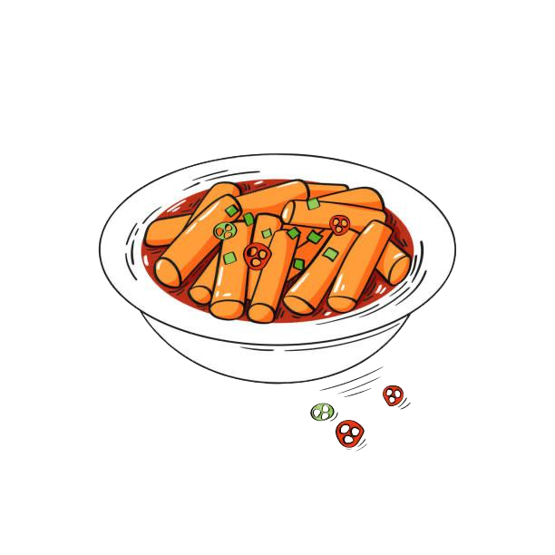

Tteokbokki Recipe
Spicy rice cakes in a savory chili sauce.
Ingredients
For the Tteokbokki:
- 1 lb (450g) tteok (Korean rice cakes, preferably oval-shaped)
- 4 cups (960ml) water or anchovy broth (for richer flavor)
- 2 tablespoons gochujang (Korean red chili paste)
- 1 tablespoon gochugaru (Korean red pepper flakes) (optional for extra heat)
- 1 tablespoon soy sauce
- 1 tablespoon sugar (or honey)
- 1 teaspoon sesame oil
- 2 cloves garlic, minced
- 1/2 medium onion, sliced
- 2 green onions, chopped (for garnish)
- 1/2 hard-boiled egg (optional, for garnish)
- 1 tablespoon sesame seeds (optional, for garnish)
Optional Add-ins:
- 1/2 cup fish cakes (sliced)
- 1/2 cup cabbage or spinach (chopped)
- 1 tablespoon gochujang (extra, for extra spice)
Preparation Time
- Prep time: 10 minutes
- Cook time: 15 minutes
- Total time: ~25 minutes
Instructions
- Prepare the Rice Cakes:
- If you're using tteok (rice cakes) from a store, soak them in warm water for about 20-30 minutes if they are hard or dry. If they are fresh, skip this step.
- Make the Broth:
- In a large pan or pot, combine the water (or anchovy broth) with gochujang, gochugaru (optional), soy sauce, and sugar. Stir until the gochujang dissolves into the liquid.
- Cook the Tteokbokki:
- Add the soaked rice cakes to the pot with the broth. Bring the mixture to a simmer over medium heat.
- Cook for about 8-10 minutes, stirring occasionally, until the rice cakes soften and the sauce thickens.
- Add Flavor and Garnishes:
- Add minced garlic, sliced onion, and fish cakes (if using) to the pot. Stir well.
- Let the stew cook for another 5 minutes, or until the rice cakes are fully tender and the broth has thickened to a sticky consistency.
- Drizzle sesame oil over the dish and stir.
- Serve:
- Garnish with chopped green onions, a hard-boiled egg (optional), and a sprinkle of sesame seeds.
- Enjoy:
- Serve the Tteokbokki hot, and enjoy the chewy, spicy, and slightly sweet flavors of this popular Korean street food!
Tteokbokki is a comforting and addictive dish that's perfect for a quick meal or snack. The combination of chewy rice cakes in a savory-spicy sauce makes it a beloved Korean comfort food, often found in street food stalls across the country. Feel free to adjust the spice level to your preference!